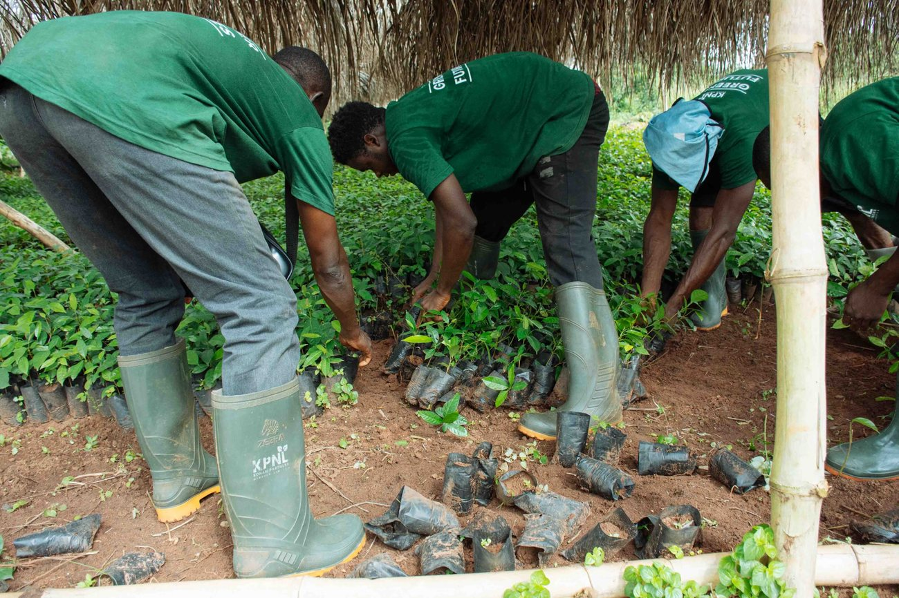
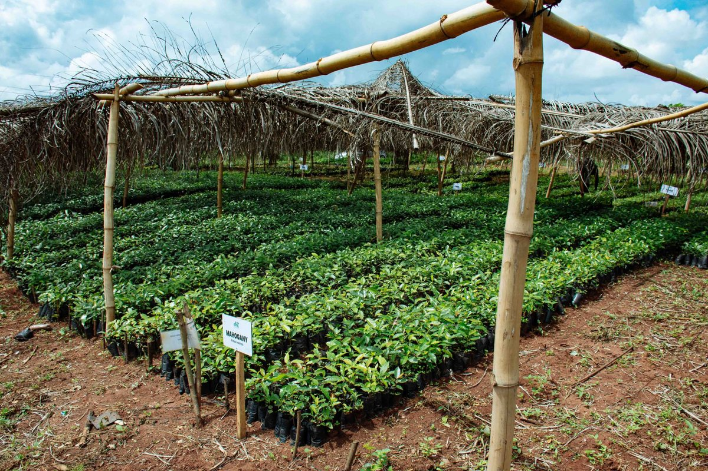
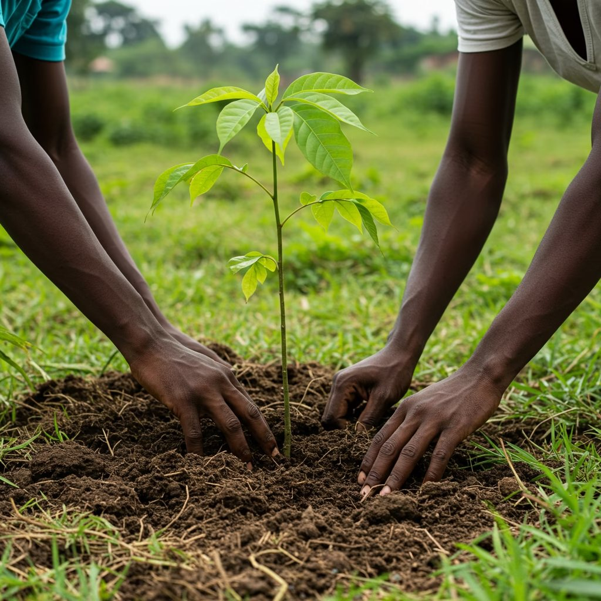
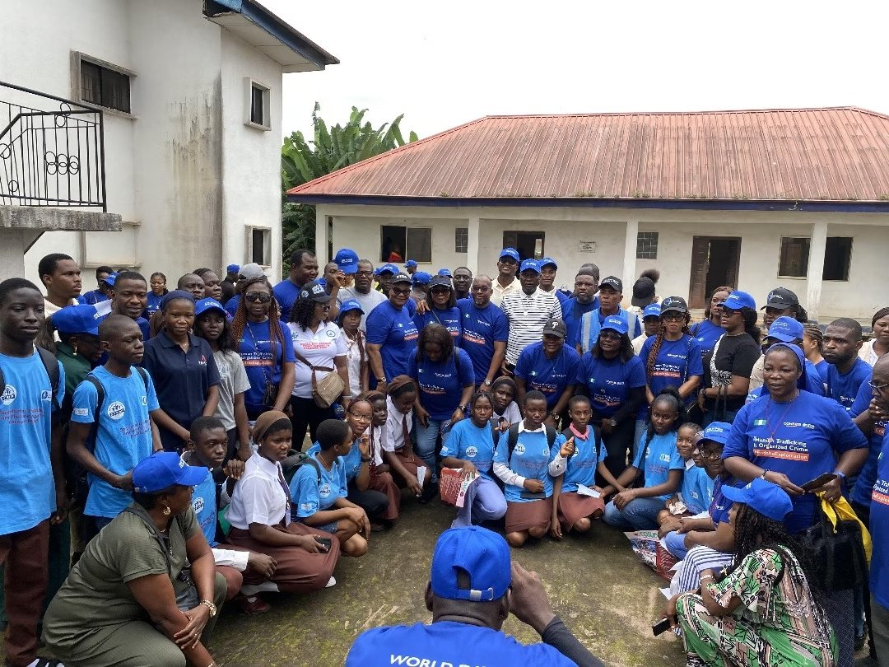
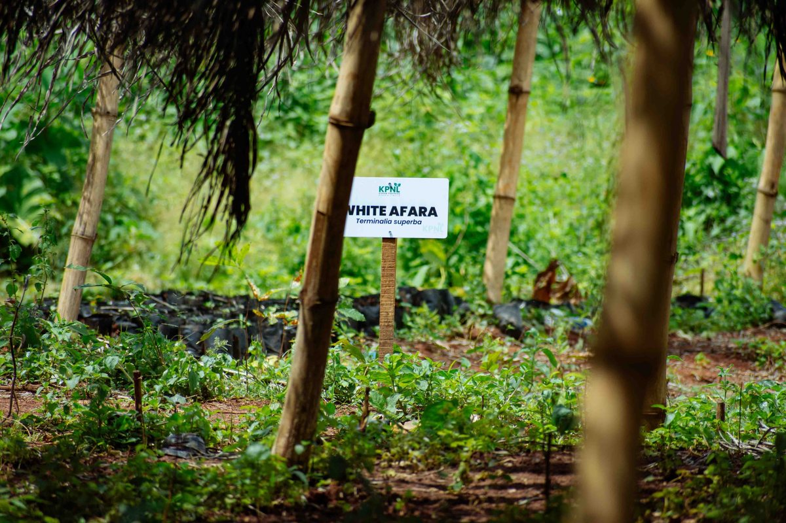

How Teasoo helped a major energy client design, govern and deliver one of Nigeria's largest corporate reforestation programmes — from strategy to trees in the ground.
The client had committed to a landmark reforestation programme in a degraded Edo State reserve — but needed a credible way to design it, engage host communities, meet international standards, and prove the carbon and biodiversity impact to regulators and investors.
native trees established across the reserve in the first planting cycles, with survival tracked plot-by-plot.
host communities engaged, with plantation guards and nursery jobs created locally.
CO₂ projected sequestration over the programme's carbon horizon.
of activity aligned to a governance framework regulators and assurers can trust.

Teasoo gave a bold environmental commitment the structure, governance and evidence base it needed to become real — and defensible.Programme partner · Tree4Life




Teasoo ran the programme end-to-end: setting the strategy, standing up the operating model, and building the reporting that turns fieldwork into credible disclosure.
Teasoo takes commitments from pledge to proof — strategy, delivery and reporting in one team.